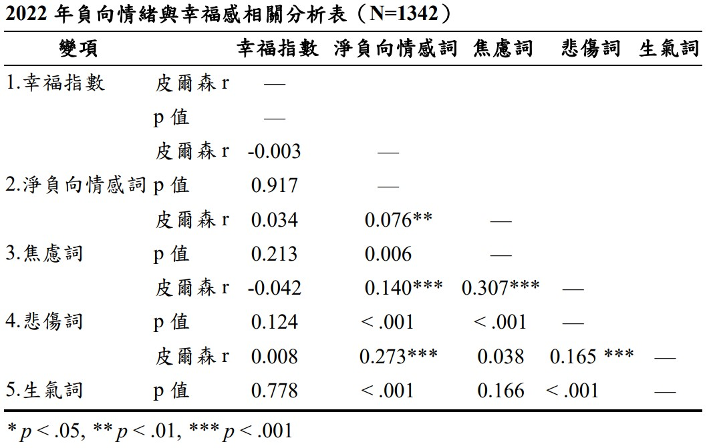
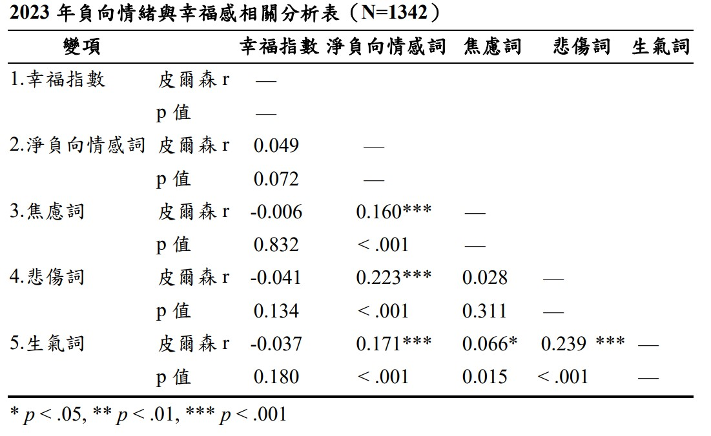

2022.6~7 vs. 2023.4~5
使用者情緒與城市幸福感
以下兩個表格透過相關分析顯示2022年和2023年負向情緒詞以及子細項指標與當年幸福指數的結果。
根據國際經濟合作發展組織（The Organization for Economic Co-operation and Development, OECD）提出的「美好生活指數（Your Better Life Index）」計算幸福指數，其中包括「統計指數」與「民調指數」，統計指數的計算方式是根據行政院主計處公布的各領域指標的原始統計數值，（如：每人可支配所得、人均居住面積……等）轉換為 0~10 分的指標分數，最後各領域分數平均後乘以10，即為統計指數。 民調指數的計算方式是根據民眾在各指標回答「滿意」和「非常滿意」的比率做為滿意度分數，各領域滿意度分數同政府統計數據轉換為指標分數。幸福指數則為統計指數與民調指數之平均。

- 結論
整個負向情緒詞與子細項的指標雖與民眾的幸福感有呈現負相關的趨勢，但皆未達到顯著相關。
雖然2022年與2023年的負向情緒與民眾的幸福感大致呈現負相關的趨勢，卻沒有達到顯著的相關。推測這樣的結果可呼應到前述討論正負向情緒時所提到可能原因，如政府的防疫有成等因素，因此民眾的生活並來嚴重受到疫情影響。